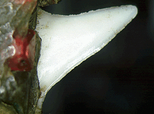

Turquoise Mosaics Many different materials were used on the mosaics. On this animal head the eyes are made from yellow-banded conch shell and pyrite, surrounded by dark green malachite (a copper carbonate mineral); tiny seed pearls were used for the 'eyebrows'; the mouth is coloured with garnets and lined with small, very sharp sharks' teeth. The animal head was made from a gourd but most of the mosaics were formed on models made of wood, like the next example. Click on the highlighted text or image to see pictures of the other materials. |